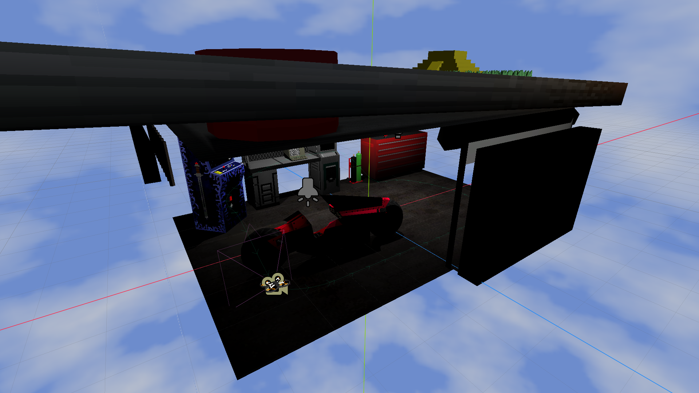

This terminal provides an overview of the inspiration, processes, and resources used to create this website. If you'd like to check it out in even more detail, the code and assets are freely available on GitHub.
I built it for fun, but it also serves as a showcase of my skills and my own tiny slice of the internet :3
I hope you enjoy, Payton